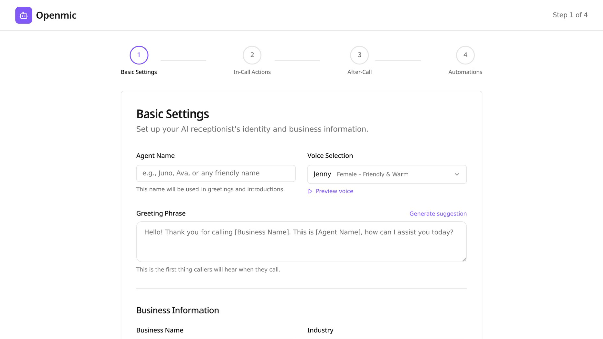
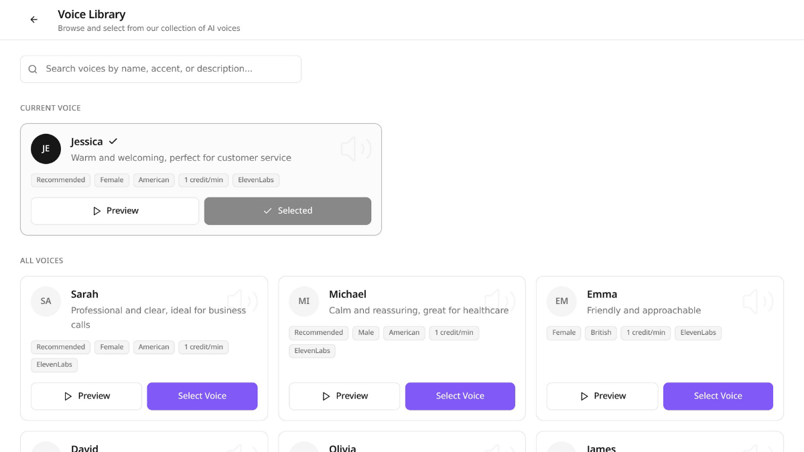
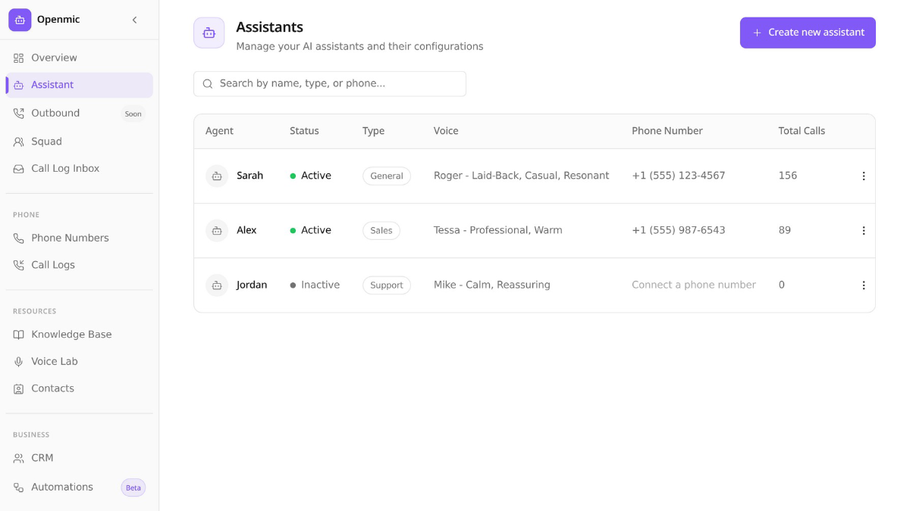
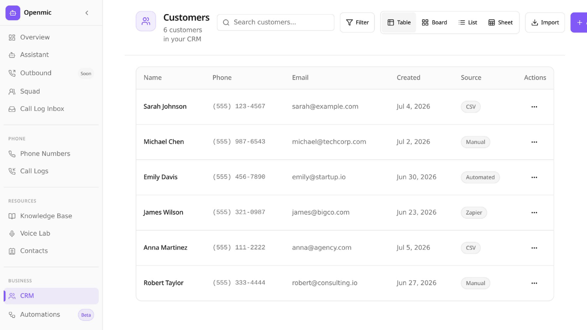
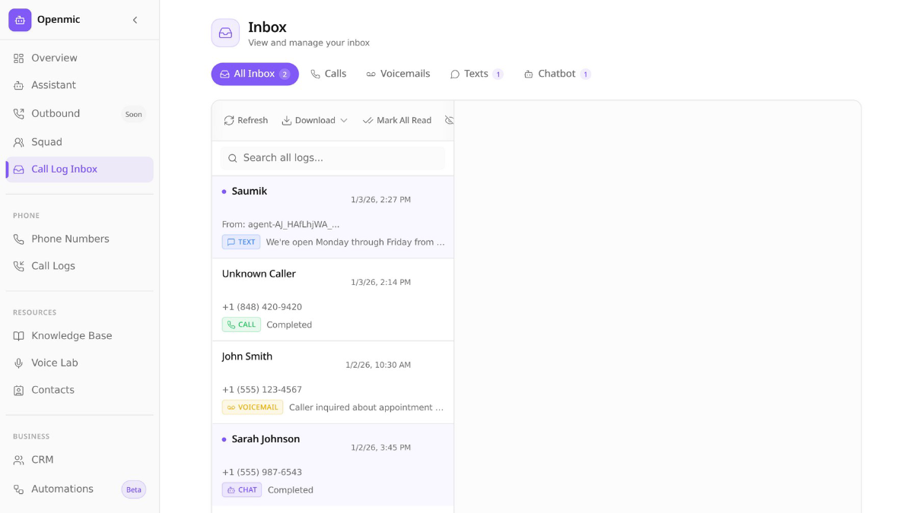
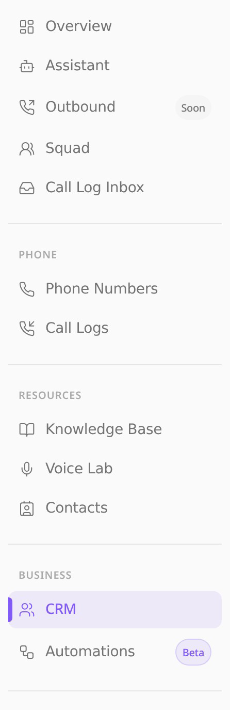
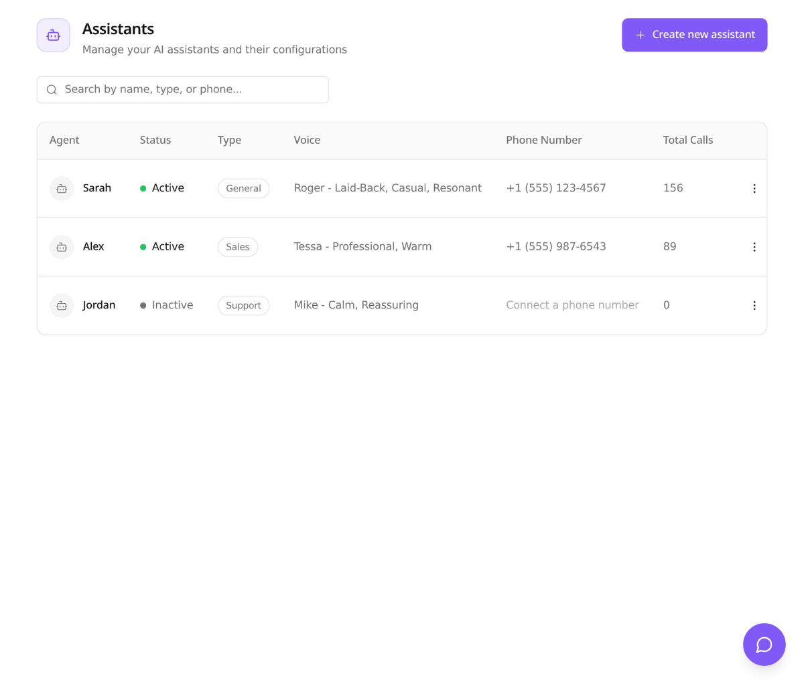

Shaivya Shashwat / Product Designer / Attack Capital, New York / Available 2026 / Shaivya Shashwat / Product Designer / Attack Capital, New York / Available 2026 /
AI Voice-Agent Platform · 2026
OpenMic
A voice agent that answers every inbound call, live in about 20 minutes of guided setup. I designed the complete admin experience: agent persona configuration, voice lab, onboarding, CRM, and call inbox.
Role, Product Designer
Team, Attack Capital
Scope, Onboarding + dashboard
Tools, Figma · Lovable · Claude
▶ Live tour, CRM, call logs, voice lab, contacts, integrations, usage
01 / The problem
Voice AI is powerful, and terrifying to hand your front desk to.
A practice adopting an AI receptionist is trusting software with its patients' first impression. The design bet: make setup feel like answering questions about your business, not programming an agent, and make everything the agent does afterwards auditable in one inbox. Configuration depth stays available for power users; it never blocks the first call.
02 / Onboarding
From business name to working agent in one guided flow.
Signup asks for the business, not the tech: name, hours, what callers usually need. The agent assembles itself from those answers, and a voice library lets the practice pick how it sounds before going live.
▶ Onboarding in motion, entering a business name, advancing the flow


03 / The agent workspace
Persona, prompts, and voice, legible to non-engineers.
Agent configuration reads as a form about behavior, not a prompt console. The voice lab makes tuning audible, and every capability the agent gains is visible in the same panel where you'd revoke it.

AI assistant configuration
04 / After the call
Every conversation lands somewhere a human can act on it.
A built-in CRM with table, board, list, and sheet views; a call-log inbox for reviewing what the agent said; and a dashboard walkthrough that shows how the whole loop connects. The AI takes the call, the practice keeps the record.
▶ GIF, navigating CRM → call logs → voice lab → usage

Built-in CRM, customers with source tags

Call-log inbox
05 / Details
Grouped navigation and a configuration panel built for trust.
The sidebar groups the platform by job, agents, operations, developer tools, with trial status always visible. Close-ups of the states, spacing, and hierarchy that keep a dense product calm.

